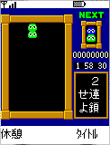
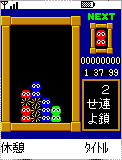
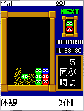
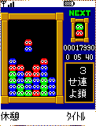
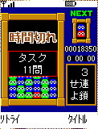
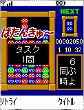

|  |
■ゲーム内容
ゲームがスタートすると、右下に課題が表示されます
課題は以下の種類があります
１）○ぷよ同時
指定された数の「ぷよ」を同時に消せば達成します
２）○連鎖せよ
指定された回数、連鎖できれば達成します
３）○色同時
指定された数の色を同時に消せば達成します |
|
|  |
■操作方法
【左右キー】 横移動
【決定キー（上キー）】 回転
【下キー】 速く落とす
画面上部に出現する２つのブロック（ぷよ）を回転させ、下に積んでいくゲームです。左右キーで左右に動かし、決定キーで回転させます。下を押すと、下に落ちる速度を速めることができます。
|
|
|  |
■基本ルール
同じ色の「ぷよ」が４つ以上くっつくと消えます。
「ぷよ」が消えると、その上にあった「ぷよ」はそのまま下に落ちてきます。
それを利用して連鎖的に「ぷよ」を消していくと、高得点が狙えます。 |
|
|  |
■ステージクリア！
達成すると次の課題が出題されます。
課題を達成すると、制限時間が一定量増えます。
課題を達成しつづける限り延々と続きます。
|
|
|  |
■タイムオーバー！
ゲームをスタートすると、
横の制限時間がどんどん減っていきます。
制限時間内に課題を達成しましょう！
|
|
|  |
■ゲームオーバー！
以下の状態になるとゲームオーバーです。
・制限時間が０になる
・左３列目が最上段まで積みあがる
最後に、何問まで達成できたかが表示されます。
|
|